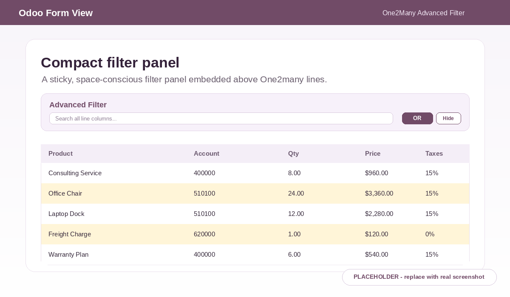
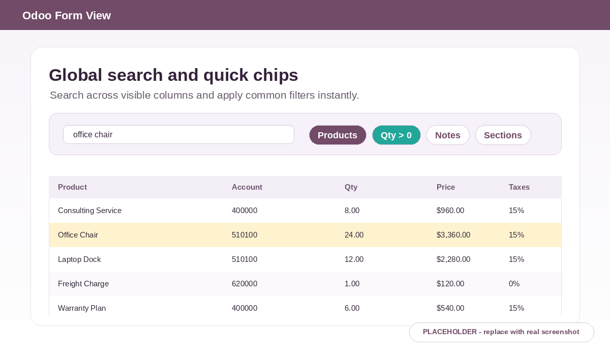
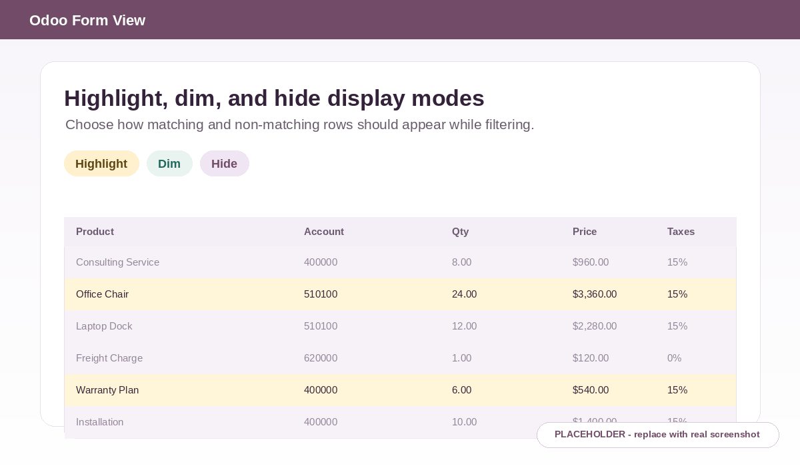

One2Many Advanced Filter
Smart Embedded Filtering for Odoo One2many Lines
Filter invoice lines, sale order lines, purchase lines, BOM lines, stock operations, and any One2many list directly inside the form view.

Why Embedded Filtering Matters
Large business documents can quickly become difficult to review when every line must be found by scrolling. Invoices can contain many charge lines, sales orders can include hundreds of products, purchase orders can carry many vendor lines, and manufacturing or inventory forms can expose long operational lists.
- Large invoices with many lines
- Sales orders with hundreds of products
- Purchase orders with many vendor lines
- Manual scrolling wastes time
- Standard One2many lists do not provide embedded filtering
- Users need faster focus inside the same form view
Powerful Filtering Features
A compact, native-style filter panel brings fast search and advanced filtering directly to One2many list views without changing the underlying records.
Global Inline Search
Search across visible columns from one compact input.
Multi-field Dynamic Filtering
Build conditions against the fields available in the current list.
Advanced Operators
Use operators for text, number, boolean, date, and relational values.
AND / OR Logic
Combine multiple rules to match broad or precise review workflows.
Quick Filter Chips
Apply frequent filters with one click for faster line review.
Display Modes
Hide, highlight, or dim non-matching lines based on user preference.
Sticky Compact Filter Panel
Keep filtering tools close to the line list while reviewing data.
No Reload / No RPC Filtering
Filter on the client side without form reloads or server requests.
Native Odoo UI
Designed to feel familiar inside the Odoo backend experience.
Screenshots
The included images are clear placeholders. Replace them with real screenshots after capturing the module inside an Odoo 19 database.

Compact filter panel

Global search and quick chips

Highlight, dim, and hide display modes
See It In Action
The demo placeholder below is intentionally small and optimized. Replace it with a real, optimized GIF capture when the final demo workflow is recorded.
Performance Focused
Filtering is performed in the browser UI. It helps users focus on visible One2many rows without changing saved business data or triggering unnecessary backend work.
Use Cases
- Accounting invoice and journal entry lines
- Sales order product lines
- Purchase order vendor lines
- Inventory and stock operation lines
- Manufacturing BOM and component lines
- Custom One2many models